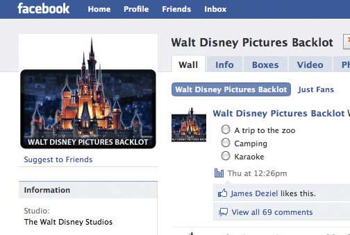
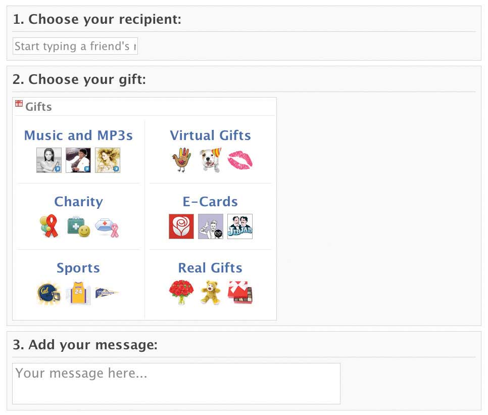

After studying this section you should be able to do the following:
Here’s how much of a Web 2.0 guy Mark Zuckerberg is: during the weeks he spent working on Facebook as a Harvard sophomore, he didn’t have time to study for a course he was taking, “Art in the Time of Augustus,” so he built a Web site containing all of the artwork in class and pinged his classmates to contribute to a communal study guide. Within hours, the wisdom of crowds produced a sort of custom CliffsNotes for the course, and after reviewing the Web-based crib sheet, he aced the test. Turns out he didn’t need to take that exam, anyway. Zuck (that’s what the cool kids call him)For an insider account of Silicon Valley Web 2.0 startups, see Sarah Lacy, Once You’re Lucky, Twice You’re Good: The Rebirth of Silicon Valley and the Rise of Web 2.0. (New York: Gotham Books, 2008). dropped out of Harvard later that year.
Zuckerberg is known as both a shy, geeky, introvert who eschews parties, as well as for his brash Silicon Valley bad-boy image. After Facebook’s incorporation, Zuckerberg’s job description was listed as “Founder, Master and Commander [and] Enemy of the State.”Timothy McGinn, “Online Facebooks Duel over Tangled Web of Authorship,” Harvard Crimson, May 28, 2004. An early business card read “I’m CEO...Bitch.”Claire Hoffman, “The Battle for Facebook,” Rolling Stone, June 26, 2008, 9. And let’s not forget that Facebook came out of drunken experiments in his dorm room, one of which was initially to have compared classmates to farm animals (Zuckerberg, threatened with expulsion, later apologized). For one meeting with Sequoia Capital, the venerable Menlo Park venture capital firm that backed Google and YouTube, Zuckerberg showed up in his pajamas.Claire Hoffman, “The Battle for Facebook,” Rolling Stone, June 26, 2008.
By the age of twenty-three, Mark Zuckerberg had graced the cover of Newsweek, been profiled on 60 Minutes, and was discussed in the tech world with a reverence previously reserved only for Steve Jobs and the Google guys, Sergey Brin and Larry Page. But Mark Zuckerberg’s star rose much faster than any of these predecessors. Just two weeks after Facebook launched, the firm had four thousand users. Ten months later it was up to one million. The growth continued, and the business world took notice. In 2006, Viacom (parent of MTV) saw that its core demographic was spending a ton of time on Facebook and offered to buy the firm for three quarters of a billion dollars. Zuckerberg passed.Steve Rosenbush, “Facebook’s on the Block,” BusinessWeek, March 28, 2006. Yahoo! offered up a cool one billion dollars (twice). Zuck passed again, both times.
As growth skyrocketed, Facebook built on its stranglehold of the college market (85 percent of four-year college students are Facebook members), opening up first to high schoolers, then to everyone. Web hipsters started selling shirts emblazoned with “I Facebooked your Mom!” Even Microsoft wanted some of Facebook’s magic. In 2006, the firm locked up the right to broker all banner ad sales that run on the U.S. version of Facebook, guaranteeing Zuckerberg’s firm one hundred million dollars a year through 2011. In 2007, Microsoft came back, buying 1.6 percent of the firm for two hundred forty million dollars and securing the rights to sell banner ads on all Facebook sites worldwide (70 percent of Facebook users are outside the United States).
The investment was a shocker. Do the math and a 1.6 percent stake for two hundred forty million dollars values Facebook at fifteen billion dollars (more on that later). That meant that a firm that at the time had only five hundred employees, one hundred fifty million dollars in revenues, and was helmed by a twenty-three-year-old college dropout in his first “real job,” was more valuable than General Motors. Then in May 2008 Facebook hit another major milestone: it passed MySpace to become the world’s largest social network. Rupert Murdoch, whose News Corporation owns MySpace, engaged in a little trash talk, referring to Facebook as “the flavor of the month.”Brian Morrissey, “Murdoch: Facebook Is ‘Flavor of the Month,’” Media Week, June 20, 2008.
Watch your back Rupert. Or on second thought, watch Zuckerberg’s. By spring 2009, Facebook had more than twice MySpace’s monthly unique visitors worldwide;E. Schonfeld, “Dear Owen, Good Luck with That,” TechCrunch, April 24, 2009. by June, Facebook surpassed MySpace in the United States;“Facebook Dethrones MySpace in the U.S.,” Los Angeles Times, June 16, 2009, http://articles.latimes.com/2009/jun/16/business/fi-facebook16. and by July, Facebook announced that it surpassed 350 million users and was cash-flow positiveWhen a company’s revenues can cover its operating costs..D. Gage, “Facebook Claims 250 Million Users,” InformationWeek, July 16, 2009. Murdoch, the media titan who stood atop an empire that includes the Wall Street Journal and Fox, had been outmaneuvered by “the kid.”
Looking at the “flavor of the month” and trying to distinguish the reality from the hype is a critical managerial skill. In Facebook’s case, there are a lot of folks with a vested interest in figuring out where the firm is headed. If you want to work there, are you signing on to a firm where your stock options and 401k contributions are going to be worth something or worthless? If you’re an investor and Facebook goes publicThe first time a firm sells stock to the public; formally called an initial public stock offering (IPO)., should you shortShort selling is an attempt to profit from a falling stock price. Short sellers sell shares they don’t own with an obligation of later repayment. They do so in the hope that the price of sold shares will fall. They then repay share debt with shares purchased at a lower price and pocket the difference (spread) between initial share price and repayment price. the firm or increase your holdings? Would you invest in or avoid firms that rely on Facebook’s business? Should your firm rush to partner with the firm? Would you extend the firm credit? Offer it better terms to secure its growing business, or worse terms because you think it’s a risky bet? Is this firm the next Google (underestimated at first, and now wildly profitable and influential), the next GeoCities (Yahoo! paid three billion dollars for it—no one goes to the site today), or the next Skype (deeply impactful with over four hundred forty million accounts worldwide, but not much of a profit generator)? The jury is still out on all this, but let’s look at the fundamentals with an eye to applying what we’ve learned. No one has a crystal ball, but we do have some key concepts that can guide our analysis. And there are a lot of broadly applicable managerial lessons that can be gleaned by examining Facebook’s successes and missteps.
Many entrepreneurs accept startup capital from venture capitalists (VCs)Investor groups that provide funding in exchange for a stake in the firm, and often, a degree of managerial control (usually in the form of a voting seat or seats on the firm’s board of directors)., investor groups that provide funding in exchange for a stake in the firm, and often, a degree of managerial control (usually in the form of a voting seat or seats on the firm’s board of directorsGroup assigned to govern, advise, and provide oversight for the firm. The board’s many responsibilities often include hiring and firing authority for the CEO.). Typically, the earlier a firm accepts VC money, the more control these investors can exert (earlier investments are riskier, so VCs can demand more favorable terms). VCs usually have deep entrepreneurial experience, a wealth of contacts, and can often offer important guidance and advice, but strong investor groups can oust a firm’s founder and other executives if they’re dissatisfied with the firm’s performance.
At Facebook, however, Zuckerberg owns an estimated 20 percent to 30 percent of the company, and controls three of five seats on the firm’s board of directors. That means that he’s virtually guaranteed to remain in control of the firm, regardless of what investors say. Maintaining this kind of control is unusual in a startup, and his influence is a testament to the speed with which Facebook expanded. By the time Zuckerberg reached out to VCs, his firm was so hot that he could call the shots, giving up surprisingly little in exchange for their money.
After studying this section you should be able to do the following:
The prior era’s Internet golden boy, Netscape founder Marc Andreessen, has said that Facebook is “an amazing achievement one of the most significant milestones in the technology industry in this decade.”Fred Vogelstein, “How Mark Zuckerberg Turned Facebook into the Web’s Hottest Platform,” Wired, September 6, 2007. While still in his twenties, Andreessen founded Netscape, eventually selling it to AOL for over four billion dollars. His second firm, Opsware, was sold to HP for $1.6 billion. He joined Facebook’s Board of Directors within months of making this comment. Why is Facebook considered such a big deal?
First there’s the growth: between December 2008 and 2009, Facebook was adding between six hundred thousand and a million users a day. It was as if every twenty-four hours, a group as big or bigger than the entire city of Boston filed into Facebook’s servers to set up new accounts. Roughly half of Facebook users visit the site every single day,D. Gage, “Facebook Claims 250 Million Users,” InformationWeek, July 16, 2009. with the majority spending thirty minutes or more getting their daily Facebook fix.Thomas Krivak, “Facebook 101: Ten Things You Need to Know about Facebook,” Information Today, March 2008. And it seems that Mom really is on Facebook (Dad, too); users thirty-five years and older account for more than half of Facebook’s daily visitors and its fastest growing population.John Hagel and John Seely Brown, “Life on the Edge: Learning from Facebook,” BusinessWeek, April 2, 2008; and D. Gage, “Facebook Claims 250 Million Users,” InformationWeek, July 16, 2009.
Then there’s what these users are doing: Facebook isn’t just a collection of personal home pages and a place to declare your allegiance to your friends. The integrated set of Facebook services encroaches on a wide swath of established Internet businesses. It’s not just that the site offers tools for messaging and chat; it’s the first-choice messaging tool for a generation. E-mail is for your professors, but Facebook is for friends. In photos, Google, Yahoo! and MySpace all spent millions to acquire photo sharing tools (Picasa, Flickr, and Photobucket, respectively). But Facebook is now the biggest photo-sharing site on the Web, taking in some twenty-eight million photos each day.F. Vogelstein, “Mark Zuckerberg: The Wired Interview,” Wired, June 29, 2009. And watch out YouTube. Facebookers share eight million videos each month. YouTube will get you famous, but Facebook is a place most go to share clips they only want friends to see.
As for search, Facebook’s got designs on that, too. Google and Bing index some Facebook content, but since much of Facebook is private, accessible only among friends, this represents a massive blind spot for Google search. Sites that can’t be indexed by Google and other search engines are referred to as the dark WebSites that can’t be indexed by Google and other search engines.. While Facebook’s partnership with Microsoft currently offers web search results through Bing.com, Facebook has announced its intention to offer its own search engine with real-time access to up-to-the-minute results from status updates, links, and other information made available to you by your friends. If Facebook can tie together standard Internet search with its dark Web content, this just might be enough for some to break the Google habit.
Facebook is a kingmaker, opinion catalyst, and traffic driver. While in the prior decade news stories would carry a notice saying “copyright: do not distribute,” today major news outlets, including the New York Times, offer Facebook icons alongside every copyrighted story, encouraging users to “share” content on in their profile pages. Like digital photos, video, and instant messaging, link sharing is a Facebook sharp elbow to the competition. Suddenly Facebook gets space on a page along side Digg.com and Del.icio.us, even though those guys showed up first.
And Facebook is political—in big, regime-threatening ways. The site is considered such a powerful tool in the activist’s toolbox that China, Iran, and Syria are among nations that have, at times, attempted to block Facebook access within their borders. Egyptians have used the site to protest for democracy. Saudi women have used it to lobby for driving privileges. ABC News cosponsored U.S. presidential debates with Facebook. And Facebook cofounder Chris Hughes was even recruited by the Obama campaign to create my.barackobama.com, a social media site considered vital in the 2008 U.S. presidential victory.D. Talbot, “How Obama Really Did It,” Technology Review, September/October 2008; and E. McGirt, “How Chris Hughes Helped Launch Facebook and the Barack Obama Campaign,” Fast Company, March 17, 2009, http://www.fastcompany.com/magazine/134/boy-wonder.html.
The Facebook cloudA collection of resources available for access over the Internet. (the big group of connected servers that power the site) is scattered across multiple facilities, including server farms in San Francisco, Santa Clara, and northern Virginia.Alan Zeichick, “How Facebook Works,” Technology Review, July/August 2008. The innards that make up the bulk of the system aren’t that different from what you’d find on a high-end commodity workstation. Standard hard drives and eight core Intel processors—just a whole lot of them lashed together through networking and software.
Much of what powers the site is open source software (OSS)Software that is free and where anyone can look at and potentially modify the code.. A good portion of the code is in PHP (a scripting language particularly well-suited for Web site development), while the databases are in MySQL (a popular open source database). The object cache that holds frequently accessed objects in chip-based RAM instead of on slower hard drives is managed through the open source product called Memcache.
Other code components are written in a variety of languages, including C++, Java, Python, and Ruby, with access between these components managed by a proprietary code layer the firm calls Thrift. Facebook also developed its own media serving solution, called Haystack. Haystack coughs up photos 50 percent faster than more expensive, proprietary solutions, and since it’s done in-house, it saves Facebook costs that other online outlets spend on third-party content delivery networks (CDN)Systems distributed throughout the Internet (or other network) that help to improve the delivery (and hence loading) speeds of Web pages and other media, typically by spreading access across multiple sites located closer to users. Akamai is the largest CDN, helping firms like CNN and MTV quickly deliver photos, video, and other media worldwide. like Akamai. Facebook receives some fifty million requests per second,Sharon Gaudin, “Facebook Rolls Out Storage System to Wrangle Massive Photo Stores,” Computerworld, April 1, 2009, http://www.computerworld.com/s/article/9130959/Facebook_rolls_out_storage_system_to_wrangle_massive_photo_stores. yet 95 percent of data queries can be served from a huge, distributed server cache that lives in over fifteen terabytes of RAM (objects like video and photos are stored on hard drives).Alan Zeichick, “How Facebook Works,” Technology Review, July/August 2008.
Hot stuff (literally), but it’s not enough. The firm raised several hundred million dollars more in the months following the fall 2007 Microsoft deal, focused largely on expanding the firm’s server network to keep up with the crush of growth. The one hundred million dollars million raised in May 2008 was “used entirely for servers.”S. Ante, “Facebook: Friends with Money,” BusinessWeek, May 9, 2008. Facebook will be buying them by the thousands for years to come. And it’ll pay a pretty penny to keep things humming. Estimates suggest the firm spends one million dollars a month on electricity, another half million a month on telecommunications bandwidthTransmission rate, typically expressed as the number of bits per second that can be transmitted by a particular telecommunications mechanism., and at least fifteen million dollars a year in office and data center rental payments.A. Arrington, “Facebook Completes Rollout of Haystack to Stem Losses from Massive Photo Uploads,” TechCrunch, April 6, 2009.
After studying this section you should be able to do the following:
At the heart of Facebook’s appeal is a concept Zuckerberg calls the social graphThe global mapping of users, organizations, and how they are connected., which refers to Facebook’s ability to collect, express, and leverage the connections between the site’s users, or as some describe it, “the global mapping of everyone and how they’re related.”Alex Iskold, “Social Graph: Concepts and Issues,” ReadWriteWeb, September 12, 2007. Think of all the stuff that’s on Facebook as a node or endpoint that’s connected to other stuff. You’re connected to other users (your friends), photos about you are tagged, comments you’ve posted carry your name, you’re a member of groups, you’re connected to applications you’ve installed—Facebook links them all.Alan Zeichick, “How Facebook Works,” Technology Review, July/August 2008.
While MySpace and Facebook are often mentioned in the same sentence, from their founding these sites were conceived differently. It goes beyond the fact that Facebook, with its neat, ordered user profiles, looks like a planned community compared to the garish, Vegas-like free-for-all of MySpace. MySpace was founded by musicians seeking to reach out to unknown users and make them fans. It’s no wonder the firm, with its proximity to LA and ownership by News Corporation, is viewed as more of a media company. It has cut deals to run network television shows on its site, and has even established a record label. It’s also important to note that from the start anyone could create a MySpace identity, and this open nature meant that you couldn’t always trust what you saw. Rife with bogus profiles, even News Corporation’s Rupert Murdoch has had to contend with the dozens of bogus Ruperts who have popped up on the service!Laura Petrecca, “If You See These CEOs on MySpace...” USA Today, September 25, 2006.
Facebook, however, was established in the relatively safe cocoon of American undergraduate life, and was conceived as a place where you could reinforce contacts among those who, for the most part, you already knew. The site was one of the first social networks where users actually identified themselves using their real names. If you wanted to be distinguished as working for a certain firm or as a student of a particular university, you had to verify that you were legitimate via an e-mail address issued by that organization. It was this “realness” that became Facebook’s distinguishing feature—bringing along with it a degree of safety and comfort that enabled Facebook to become a true social utility and build out a solid social graph consisting of verified relationships. Since “friending” (which is a link between nodes in the social graph) required both users to approve the relationship, the network fostered an incredible amount of trust. Today, many Facebook users post their cell phone numbers, their birthdays, offer personal photos, and otherwise share information they’d never do outside their circle of friends. Because of trust, Facebook’s social graph is stronger than MySpace’s.
There is also a strong network effectAlso known as Metcalfe’s Law, or network externalities. When the value of a product or service increases as its number of users expands. to Facebook (see Chapter 5 "Understanding Network Effects"). People are attracted to the service because others they care about are more likely to be there than anywhere else online. Without the network effect Facebook wouldn’t exist. And it’s because of the network effect that another smart kid in a dorm can’t rip off Zuckerberg in any market where Facebook is the biggest fish. Even an exact copy of Facebook would be a virtual ghost town with no social graph (see “It’s Not the Technology” below).
The switching costsThe cost a consumer incurs when moving from one product to another. It can involve actual money spent (e.g., buying a new product) as well as investments in time, any data loss, and so forth. for Facebook are also extremely powerful. A move to another service means recreating your entire social graph. The more time you spend on the service, the more you’ve invested in your graph and the less likely you are to move to a rival.
Does your firm have Facebook envy? KickApps, an eighty-person startup in Manhattan, will give you the technology to power your own social network. All KickApps wants is a cut of the ads placed around your content. In its first two years, the site has provided the infrastructure for twenty thousand “mini Facebooks,” registering three hundred million page views a month.Bryant Urstadt, “The Business of Social Networks,” Technology Review, July/August 2008. NPR, ABC, AutoByTel, Harley Davidson, and Kraft all use the service (social networks for Cheez Whiz?).
There’s also Ning, run by former Goldman Sachs analyst Gina Bianchini (Netscape founder Mark Andreessen is her CTO). Ning has over one million mini networks organized on all sorts of topics; families, radio personalities, church groups, vegans, diabetes sufferers; and is adding 1,500 to 2,000 a day.
Or how about the offering from Agriya Infoway, based in Chennai, India? The firm will sell you Kootali, a software package that lets developers replicate Facebook’s design and features, complete with friend networks, photos, and mini-feeds. They haven’t stolen any code, but they have copied the company’s look and feel. Those with Zuckerberg ambitions can shell out the four hundred bucks for Kootali. Sites with names like Faceclub.com and Umicity.com have done just that—and gone nowhere.
Mini networks that extend the conversation (NPR) or make it easier to find other rapidly loyal product fans (Harley Davidson) may hold a niche for some firms. And Ning is a neat way for specialized groups to quickly form in a secure environment that’s all their own (it’s just us, no “creepy friends” from the other networks). While every market has a place for its niches, none of these will grow to compete with the dominant social networks. The value isn’t in the technology; it’s in what the technology has created over time. For Facebook, it’s a huge user base that (for now at least) is not going anywhere else.
After studying this section you should be able to do the following:
While the authenticity and trust offered by Facebook was critical, offering News Feeds concentrated and released value from the social graph. With feeds, each time a user performs an activity in Facebook—makes a friend, uploads a picture, joins a group—the feed blasts this information to all of your friends in a reverse chronological list that shows up right when they next log on. An individual user’s activities are also listed within a mini Feed that shows up on their profile. Get a new job, move to a new city, read a great article, have a pithy quote—post it to Facebook—the feed picks it up, and the world of your Facebook friends will get an update.
Feeds are perhaps the linchpin of Facebook’s ability to strengthen and deliver user value from the social graph, but for a brief period of time it looked like feeds would kill the company. News Feeds were launched on September 5, 2006, just as many of the nation’s undergrads were arriving on campus. Feeds reflecting any Facebook activity (including changes to the relationship status) became a sort of gossip page splashed right when your friends logged in. To many, feeds were first seen as a viral blast of digital nosiness—a release of information they hadn’t consented to distribute widely.
And in a remarkable irony, user disgust over the News Feed ambush offered a whip crack demonstration of the power and speed of the feed virus. Protest groups formed, and every student who, for example, joined a group named Students Against Facebook News Feed, had this fact blasted to their friends (along with a quick link where friends, too, could click to join the group). Hundreds of thousands of users mobilized against the firm in just twenty-four hours. It looked like Zuckerberg’s creation had turned on him, Frankenstein style.
The first official Facebook blog post on the controversy came off as a bit condescending (never a good tone to use when your customers feel that you’ve wronged them). “Calm down. Breathe. We hear you,” wrote Zuckerberg on the evening of September 5. The next post, three days after the News Feed launch, was much more contrite (“We really messed this one up,” he wrote). In the 484-word open letter, Zuckerberg apologized for the surprise, explaining how users could opt out of feeds. The tactic worked, and the controversy blew over.Fred Vogelstein, “How Mark Zuckerberg Turned Facebook into the Web’s Hottest Platform,” Wired, September 6, 2007. The ability to stop personal information from flowing into the feed stream was just enough to stifle critics, and as it turns out, a lot of people really liked the feeds and found them useful. It soon became clear that if you wanted to use the Web to keep track of your social life and contacts, Facebook was the place to be. Not only did feeds not push users away, by the start of the next semester subscribers had nearly doubled!
After studying this section you should be able to do the following:
In May 2007, Facebook followed News Feeds with another initiative that set it head and shoulders above its competition. At a conference called F8 (pronounced “fate”), Mark Zuckerberg stood on stage and announced that he was opening up the screen real estate on Facebook to other application developers. Facebook published a set of application programming interfaces (APIs)Programming hooks, or guidelines, published by firms that tell other programs how to get a service to perform a task such as send or receive data. For example, Amazon.com provides APIs to let developers write their own applications and Websites that can send the firm orders. that specified how programs could be written to run within and interact with Facebook. Now any programmer could write an application that would run inside a user’s profile. Geeks of the world, Facebook’s user base could be yours! Just write something good.
Developers could charge for their wares, offer them for free, and even run ads. And Facebook let developers keep what they made. This was a key distinction; MySpace initially restricted developer revenue on the few products designed to run on their site, at times even blocking some applications. The choice was clear, and developers flocked to Facebook.
To promote the new apps, Facebook would run an Applications area on the site where users could browse offerings. Even better, News Feed was a viral injection that spread the word each time an application was installed. Your best friend just put up a slide show app? Maybe you’ll check it out, too. The predictions of one billion dollars in social network ad spending were geek catnip, and legions of programmers wanted a little bit for themselves. Apps could be cobbled together on the quick, feeds made them spread like wildfire, and the early movers offered adoption rates never before seen by small groups of software developers. People began speaking of the Facebook Economy. Facebook was considered a platform. Some compared it to the next Windows, Zuckerberg the next Gates (hey, they both dropped out of Harvard, right?).
And each application potentially added more value and features to the site without Facebook lifting a finger. The initial event launched with sixty-five developer partners and eighty-five applications. There were some missteps along the way. Some applications were accused of spamming friends with invites to install them. There were also security concerns and apps that violated the intellectual property of other firms (see the “Scrabulous” sidebar below), but Facebook worked to quickly remove errant apps, improve the system, and encourage developers. Just one year in, Facebook had marshaled the efforts of some four hundred thousand developers and entrepreneurs, twenty-four thousand applications had been built for the platform, 140 new apps were being added each day, and 95 percent of Facebook members had installed at least one Facebook application. As Sarah Lacy, author of Once You’re Lucky, Twice You’re Good, put it, “with one masterstroke, Zuck had mobilized all of Silicon Valley to innovate for him.”
With feeds to spread the word, Facebook was starting to look like the first place to go to launch an online innovation. Skip the Web, bring it to Zuckerberg’s site first. Consider iLike: within the first three months, the firm saw installs of its Facebook app explode to seven million, more than doubling the number of users the firm was able to attract through the Web site it introduced the previous year. iLike became so cool that by September, platinum rocker KT Tunstall was debuting tracks through the Facebook service. A programmer named Mark Pincus wrote a Texas hold ’em game at his kitchen table.Jessica Guynn, “A Software Industry @ Facebook,” Los Angeles Times, September 10, 2007. Today his social gaming firm, Zynga, is a powerhouse, with over three dozen apps, over sixty million users, and more than one hundred million dollars in annual revenue.M. Learmonth and A. Klaasen, “Facebook Apps Will Make More Money Than Facebook in 2009,” Silicon Alley Insider, May 18, 2009. Some of Zynga’s revenues come from apps that run on MySpace or other networks, too. Zynga games include MafiaWars, Vampires, and the wildly successful Farmville, which boasts some twenty times the number of actual farms in the United States. Seth Goldstein, the CEO of SocialMedia, which developed the Food Fight app, claimed that a buffalo wing chain offered the firm eighty thousand dollars to sponsor virtual wings that Facebook users could hurl at their friends.Lindsay Blakely and Michael Copeland. “The Facebook Economy,” Business 2.0, August 23, 2007. Lee Lorenzen, founder of Altura Ventures, an investment firm exclusively targeting firms creating Facebook apps, said, “Facebook is God’s gift to developers. Never has the path from a good idea to millions of users been shorter.”Jessica Guynn, “A Software Industry @ Facebook,” Los Angeles Times, September 10, 2007.
Figure 7.1

Farmville is just one of the dozens of Facebook apps offered by Zynga, a profitable Facebook app specialist with more than $100 million in revenue.
Once Facebook became a platform, Stanford professor B. J. Fogg thought it would be a great environment for a programming class. In ten weeks his seventy-three students built a series of applications that collectively received over sixteen million installs. By the final week of class, several applications developed by students, including KissMe, Send Hotness, and Perfect Match, had all received millions of users, and class apps collectively generated more than half a million dollars in ad revenue. At least three companies were formed from the course.
Some of the folks developing Facebook applications have serious geek cred. Max Levchin, who (along with Peter Theil) founded PayPal, has widely claimed that his widget company, Slide, would be even bigger than his previous firm (for the record, PayPal sold to eBay for $1.5 billion in 2002). Legg Mason and Fidelity have each already invested at levels giving the firm a five-hundred-million-dollar valuation.Jessi Hempel and Michael Copeland, “Are These Widgets Worth Half a Billion?” Fortune, March 25, 2008. But is there that much money to be made from selling ads and mining data on SuperPoke? Levchin’s firm is working to craft new advertising measures to track and leverage engagement. Just what are users doing with the applets? With whom? And how might advertisers use these insights to build winning campaigns? Levchin thinks Slide can answer these questions and capture a ton of business along the way.
But legitimate questions remain. Are Facebook apps really a big deal? Just how important will apps be to adding sustained value within Facebook? And how will firms leverage the Facebook framework to extract their own value? A chart from FlowingData showed the top category, Just for Fun, was larger than the next four categories combined. That suggests that a lot of applications are faddish time wasters. Yes, there is experimentation beyond virtual Zombie Bites. Visa has created a small business network on Facebook (Facebook had some eighty thousand small businesses online at the time of Visa’s launch). Educational software firm Blackboard offered an application that will post data to Facebook pages as soon as there are updates to someone’s Blackboard account (new courses, whether assignments or grades have been posted, etc.). We’re still a long way from Facebook as a Windows rival, but F8 helped push Facebook to #1, and it continues to deliver quirky fun (and then some) supplied by thousands of developers off its payroll.
Rajat and Jayant Agarwalla, two brothers in Kolkata, India, who run a modest software development company, decided to write a Scrabble clone as a Facebook application. The app, named Scrabulous, was social—users could invite friends to play, or they could search for new players looking for an opponent. Their application was a smash, snagging three million registered users and seven hundred thousand players a day after just a few months. Scrabulous was featured in PC World’s 100 best products of 2008, received coverage in the New York Times, Newsweek, and Wired, and was pulling in about twenty-five thousand dollars a month from online advertising. Way to go, little guys!Heather Timmons, “Online Scrabble Craze Leaves Game Sellers at Loss for Words,” New York Times, March 2, 2008.
There is only one problem: the Agarwalla brothers didn’t have the legal rights to Scrabble, and it was apparent to anyone that from the name to the tiles to the scoring—this was a direct rip off of the well-known board game. Hasbro owns the copyright to Scrabble in the United States and Canada; Mattel owns it everywhere else. Thousands of fans joined Facebook groups with names like “Save Scrabulous” and “Please God, I Have So Little: Don’t Take Scrabulous, Too.” Users in some protest groups pledged never to buy Hasbro games if Scrabulous was stopped. Even if the firms wanted to succumb to pressure and let the Agarwalla brothers continue, they couldn’t. Both Electronic Arts and RealNetworks have contracted with the firms to create online versions of the game.
While the Facebook Scrabulous app is long gone, the tale shows just one of the challenges of creating a platform. In addition to copyright violations, app makers have crafted apps that annoy, raise privacy and security concerns, purvey pornography, or otherwise step over the boundaries of good taste. Firms from Facebook to Apple (through its iTunes app store) have struggled to find the right mix of monitoring, protection, and approval while avoiding cries of censorship.
After studying this section you should be able to do the following:
If Facebook is going to continue to give away its services for free, it needs to make money somehow. Right now that means advertising. Fortunately for the firm, online advertising is hot. For years, online advertising has been the only major media category that has seen an increase in spending (see Chapter 8 "Google: Search, Online Advertising, and Beyond…"). And while 20 percent of media consumption happens online, the Internet attracts just 6 percent of advertising dollars, suggesting there’s plenty of growth still ahead.Bryant Urstadt, “The Business of Social Networks,” Technology Review, July/August 2008. Firms spend more advertising online than they do on radio ads, and the Internet will soon beat out spending on cable TV and magazine ads.Mark Sweeney, “Internet Ad Spending Will Overtake Television in 2009,” Guardian, May 19, 2008. But not all Internet advertising is created equal. And there are signs that social networking sites are struggling to find the right ad model.
In early 2008, Google founder Sergey Brin stated, “I don’t think we have the killer best way to advertise and monetize social networks yet.” Brin went on to state that social networking ad inventory as a whole was proving problematic and that the “monetization work we were doing there didn’t pan out as well as we had hoped.”“Everywhere and Nowhere,” Economist, March 19, 2008. When Google ad partner Fox Interactive Media (the News Corporation division that contains MySpace) announced that revenue would fall one hundred million dollars short of projections, News Corporation’s stock tumbled 5 percent, analysts downgraded the company, and the firm’s chief revenue officer was dismissed.Brian Stelter, “MySpace Might Have Friends, but It Wants Ad Money,” New York Times, June 16, 2008.
Why aren’t social networks having the success of Google and other sites? Problems advertising on these sites include content adjacencyConcern that an advertisement will run near offensive material, embarrassing an advertiser and/or degrading their products or brands., and user attention. The content adjacency problem refers to concern over where a firm’s advertisements will run. Look at all of the creepy titles in social networking news groups. Do advertisers really want their ads running alongside conversations that are racy, offensive, illegal, or that may even mock their products? This potential juxtaposition is a major problem with any site offering ads adjacent to free-form social media. Summing up industry wariness, one P&G manager said, “What in heaven’s name made you think you could monetize the real estate in which somebody is breaking up with their girlfriend?”B. Stone, “Facebook Aims to Extends Its Reach across Web,” New York Times, December 1, 2008. An IDC report suggests that it’s because of content adjacency that “brand advertisers largely consider user-generated content as low-quality, brand-unsafe inventory” for running ads.R. Stross, “Advertisers Face Hurdles on Social Networking Sites,” New York Times, December 14, 2008.
Now let’s look at the user attention problem.
In terms of revenue model, Facebook is radically different from Google and the hot-growth category of search advertising. Users of Google and other search sites are on a hunt—a task-oriented expedition to collect information that will drive a specific action. Search users want to learn something, buy something, research a problem, or get a question answered. To the extent that the hunt overlaps with ads, it works. Just searched on a medical term? Google will show you an ad from a drug company. Looking for a toy? You’ll see Google ads from eBay sellers and other online shops. Type in a vacation destination and you get a long list of ads from travel providers aggressively courting your spending. Even better, Google only charges text advertisers when a user clicks through. No clicks? The ad runs at no cost to the firm. From a return on investment perspective, this is extraordinarily efficient. How often do users click on Google ads? Enough for this to be the single most profitable activity among any Internet firm. In 2008, Google revenue totaled nearly twenty-two billion dollars. Profits exceeded $4.2 billion, almost all of this from pay-per-click ads (see Chapter 8 "Google: Search, Online Advertising, and Beyond…" for more details).
While users go to Google to hunt, they go to Facebook as if they were going on a hike—they have a rough idea of what they’ll encounter, but they’re there to explore and look around, enjoy the sights (or site). They’ve usually allocated time for fun and they don’t want to leave the terrain when they’re having conversations, looking at photos or videos, and checking out updates from friends.
These usage patterns are reflected in click-through rates. Google users click on ads around 2 percent of the time (and at a much higher rate when searching for product information). At Facebook, click-throughs are about 0.04 percent.Bryant Urstadt, “The Business of Social Networks,” Technology Review, July/August 2008. Rates quoted in this piece seem high, but a large discrepancy between site rates holds across reported data.
Most banner ads don’t charge per click, but rather via something called CPMCost per thousand impressions (the M representing the roman numeral for one thousand).—that’s cost per thousand impressionsEach time an ad is served to a user for viewing. (an impression being each time an ad appears on someone’s screen). The holy grail of Internet advertising is targeting. The more focused an audience, the more likely a firm is to attract advertisers willing to pay a higher CPM to reach those users. Rates vary widely. In 2008, MySpace lowered its banner ad rate from $3.25 CPM to less than two dollars. By contrast, TechTarget, a Web publisher focusing on technology professionals, is able to command CPM rates of one hundred dollars and above (an ad inventory that valuable helped the firm go public in 2007). Technology Review magazine boasts a CPM of seventy dollars. The social networking blog Mashable has CPM rates ranging between seven and thirty-three dollars. But Facebook ads go for much, much less. Lookery, a one-time ad network that bought ad space on Facebook in bulk, had been reselling inventory at a CPM of 7.5 cents (note that Facebook does offer advertisers pay-per-click as well as impression-based, or CPM, options). Even Facebook ads with a bit of targeting are poorly priced (Facebook’s Social Ads, which allow advertisers to target users according to location and age, have a floor price of fifteen cents CPM).Bryant Urstadt, “The Business of Social Networks,” Technology Review, July/August 2008; Jessi Hempel, “Finding Cracks in Facebook,” Fortune, May 13, 2008; and E. Schonfeld, “Are Facebook Ads Going to Zero? Lookery Lowers Its Guarantee to 7.5-cent CMPs,” TechCrunch, July 22, 2008.
Facebook and other social networks are still learning what works. Ad inventory displayed on high-traffic home pages have garnered big bucks for firms like Yahoo! With MySpace and Facebook offering advertisers greater audience reach than most network television programs, there’s little reason to suggest that chunks of this business won’t eventually flow to the social networks. But even more interesting is how Facebook and widget sites have begun to experiment with relatively new forms of advertising. Many feel that Facebook has a unique opportunity to get consumers to engage with their brand, and some initial experiments point where this may be heading.
Figure 7.2
The Disney Backlot area on Facebook contains contests, movie trailers, reviews, and upcoming releases. Users can also “become a fan,” and get access to advance screenings, premiere tickets, opportunities to meet the stars, visits to movie sets, and other freebies.
Many firms have been leveraging so-called engagement adsPromotion technique popular with social media that attempts to get consumers to interact with an ad, then shares that action with friends. by making their products part of the Facebook fun. COO Sheryl Sandberg discussed Ben and Jerry’s promotion for the ice cream chain’s free cone day event. To promote the upcoming event, Ben and Jerry’s initially contracted to make two hundred and fifty thousand “gift cones” available to Facebook users; they could click on little icons that would gift a cone icon to a friend, and that would show up in their profile. Within a couple of hours, customers had sent all two hundred and fifty thousand virtual cones. Delighted, Ben and Jerry’s bought another two hundred and fifty thousand cones. Within eleven hours, half a million people had sent cones, many making plans with Facebook friends to attend the real free cone day. The day of the Facebook promotion, Ben and Jerry’s Web site registered fifty-three million impressions, as users searched for store locations and wrote about their favorite flavors.Quentin Hardy, “Facebook Thinks Outside Boxes,” Forbes, May 28, 2008. The campaign dovetailed with everything Facebook was good at: it was viral, generating enthusiasm for a promotional event and even prompting scheduling.
In other promotions, Paramount Pictures gave away two hundred and fifty thousand virtual fedoras for “Indiana Jones and the Kingdom of the Crystal Skull.” They sold out within hours, with users rallying friends, family, and colleagues to see the movie. Honda gave away three quarters of a million hearts during Valentine’s Day 2009.S. Sandberg, “Sheryl Sandberg on Facebook’s Future,” BusinessWeek, April 8, 2009. The Dr. Pepper Snapple Group offered two hundred and fifty thousand virtual Sunkist sodas, which earned the firm one hundred thirty million brand impressions in twenty-two hours. Says Sunkist’s brand manager, “A Super Bowl ad, if you compare it, would have generated somewhere between six to seven million.”Elaine Wong, “Ben & Jerry’s, Sunkist, Indy Jones Unwrap Facebook’s ‘Gift of Gab,’” Brandweek, June 1, 2008.
Of course, even with this business, Facebook may find that it competes with widget makers. Slide also offers wacky advertising programs through its own Facebook apps (the firm sits atop the most popular application developer rankings). Fox Searchlight went to Slide to allow friends to throw orange Tic Tacs at each other as part of a promotion for the movie “Juno.” Coke used Slide to distribute virtual Vitamin Water. By some estimates, in 2009, Facebook app developers took in well over half a billion dollars—exceeding Facebook’s own haul.M. Learmonth and A. Klaasen, “Facebook Apps Will Make More Money Than Facebook in 2009,” Silicon Alley Insider, May 18, 2009. Unlike Apple’s app store (where much of developer-earned revenue comes from selling apps), the vast majority of Facebook apps are free and ad-supported. That means Facebook and its app providers are in competition to monetize Facebook users, and both are running at a finite pot of recession-constrained advertising dollars.
While these efforts might be quirky and fun, are they even effective? Some of these programs are considered successes; others, not so much. Jupiter Research surveyed marketers trying to create a viral impact online and found that only about 15 percent of these efforts actually caught on with consumers.Matt Cowan, “Marketers Struggle to Get Social,” Reuters, June 19, 2008, http://www.reuters.com/news/video?videoId=84894. While the Ben and Jerry’s gift cones were used up quickly, a visit to Facebook in the weeks after this campaign saw CareerBuilder, Wide Eye Caffeinated Spirits, and Coors Light icons lingering days after their first appearance. Brands seeking to deploy their own applications in Facebook have also struggled. New Media Age reported that applications rolled out by top brands such as MTV, Warner Brothers, and Woolworths were found to have as little as five daily users. Congestion may be setting in for all but the most innovative applications, as standing out in a crowd of over twenty-three thousand applications becomes increasingly difficult.L. Goldie, “For Facebook Success Brands Must Stand Out” New Media Age, May 1, 2008.
To its credit, consumer products giant P&G has been relentlessly experimenting with leveraging social networks for brand engagement, but the results show what a tough slog this can be. The firm did garner fourteen thousand Facebook “fans” for its Crest Whitestrips product, but those fans were earned while giving away free movie tickets and other promos. The New York Times quipped that with those kinds of incentives, “even a hemorrhoid cream” could have attracted a similar group of “fans,” and when the giveaways stopped, thousands promptly “unfanned” Whitestrips. Results for Proctor and Gamble’s “2X Ultra Tide” fan page were also pretty grim. P&G tried offbeat appeals for customer-brand bonding, including asking Facebookers to post “their favorite places to enjoy stain-making moments.” But a check eleven months after launch had garnered just eighteen submissions, two from P&G, two from staffers at spoof news site The Onion, and a bunch of short posts such as “Tidealicious!”R. Stross, “Advertisers Face Hurdles on Social Networking Sites,” New York Times, December 14, 2008.
Efforts around engagement opportunities like events (Ben and Jerry’s) or products consumer are anxious to identify themselves with (a band or a movie) may have more success than trying to promote consumer goods that otherwise offer little allegiance, but efforts are so new that metrics are scarce, impact is tough to gauge, and best practices are still unclear.
Figure 7.3
Facebook sells “gifts,” icons that show up on friends’ profiles, for one dollar each.
After studying this section you should be able to do the following:
Conventional advertising may grow into a great business for Facebook, but the firm was clearly sitting on something that was unconventional compared to prior generations of Web services. Could the energy and virulent nature of social networks be harnessed to offer truly useful, consumer information to its users? Word of mouth is considered the most persuasive (and valuable) form of marketing,V. Kumar, J. Andrew Petersen, and Robert Leone, “How Valuable Is Word of Mouth?” Harvard Business Review 85, no. 10 (October 2007): 139–46. and Facebook was a giant word of mouth machine. What if the firm worked with vendors and grabbed consumer activity at the point of purchase to put into the News Feed and post to a user’s profile? If you then rented a video, bought a cool product, or dropped something in your wish list, your buddies could get a heads up and they might ask you about it. The person being asked feels like an expert, the person with the question gets a frank opinion, and the vendor providing the data just might get another sale. It looked like a home run.
This effort, named Beacon, was announced in November 2007. Some forty e-commerce sites signed up, including Blockbuster, Fandango, eBay, Travelocity, Zappos, and the New York Times. Zuckerberg was so confident of the effort that he stood before a group of Madison Avenue ad executives and declared that Beacon would represent a “once-in-a-hundred-years” fundamental change in the way media works.
Like News Feeds, user reaction was swift and brutal. The commercial activity of Facebook users began showing up without their consent. The biggest problem with Beacon was that it was “opt out” instead of “opt in.” Facebook (and its partners) assumed users would agree to sharing data in their feeds. A pop-up box did appear briefly on most sites supporting Beacon, but it disappeared after a few seconds.Ellen Nakashima, “Feeling Betrayed, Facebook Users Force Site to Honor Their Privacy,” Washington Post, November 30, 2007. Many users, blind to these sorts of alerts, either clicked through or ignored the warnings. And well...there are some purchases you might not want to broadcast to the world.
“Facebook Ruins Christmas for Everyone!” screamed one headline from MSNBC.com. Another from U.S. News and World Report read “How Facebook Stole Christmas.” The Washington Post ran the story of Sean Lane, a twenty-eight-year-old tech support worker from Waltham, Massachusetts, who got a message from his wife just two hours after he bought a ring on Overstock.com. “Who is this ring for?” she wanted to know. Facebook had not only posted a feed that her husband had bought the ring, but also that he got it for a 51 percent discount! Overstock quickly announced that it was halting participation in Beacon until Facebook changed its practice to opt in.Ellen Nakashima, “Feeling Betrayed, Facebook Users Force Site to Honor Their Privacy,” Washington Post, November 30, 2007.
MoveOn.org started a Facebook group and online petition protesting Beacon. The Center for Digital Democracy and the U.S. Public Interest Research Group asked the Federal Trade Commission to investigate Facebook’s advertising programs. And a Dallas woman sued Blockbuster for violating the Video Privacy Protection Act (a 1998 U.S. law prohibiting unauthorized access to video store rental records).
To Facebook’s credit, the firm acted swiftly. Beacon was switched to an opt-in system, where user consent must be given before partner data is sent to the feed. Zuckerberg would later say regarding Beacon: “We’ve made a lot of mistakes building this feature, but we’ve made even more with how we’ve handled them. We simply did a bad job with this release, and I apologize for it.”Caroline McCarthy, “Facebook’s Zuckerberg: ‘We Simply Did a Bad Job’ Handling Beacon,” CNET, December 5, 2007. Despite the Beacon fiasco, new users continued to flock to the site, and loyal users stuck with Zuck. Perhaps a bigger problem was that many of those forty A-list e-commerce sites that took a gamble with Facebook now had their names associated with a privacy screw up that made headlines worldwide. A manager so burned isn’t likely to sign up first for the next round of experimentation. Several months later, some thirty firms were using the opt-in system, but uptake was limited and that hundred-year change Zuckerberg talked about looked like it had been put on hold.
From the Prada example in Chapter 1 we learned that savvy managers look beyond technology and consider complete information systems—not just the hardware and software of technology but also the interactions among the data, people, and procedures that make up (and are impacted by) information systems. Beacon’s failure is a cautionary tale of what can go wrong if users fail to broadly consider the impact and implications of an information system on all those it can touch. Technology’s reach is often farther, wider, and more significantly impactful than we originally expect.
Facebook also suffered damage to its reputation, brand, and credibility, further reinforcing perceptions that the company acts brazenly, without considering user needs, and is fast and loose on privacy and user notification. Facebook worked through the feeds outrage, eventually convincing users of the benefits of feeds. But Beacon was a fiasco. And now users, the media, and watchdogs were on the alert.
When the firm modified its terms of service (TOS) policy in Spring 2009, the uproar was immediate. As a cover story in New York magazine summed it up, Facebook’s new TOS appeared to state, “We can do anything we want with your content, forever,” even if a user deletes their account and leaves the service.V. Grigoriadis, “Do You Own Facebook? Or Does Facebook Own You?” New York Times, April 5, 2009. Yet another privacy backlash!
Activists organized, the press crafted juicy, attention-grabbing headlines, and the firm was forced once again to backtrack. But here’s where others can learn from Facebook’s missteps and response. The firm was contrite and reached out to explain and engage users. The old TOS was reinstated, the firm posted a proposed new version that gave the firm broad latitude in leveraging user content without claiming ownership. And the firm renounced the right to use this content if a user closed their Facebook account. This new TOS was offered in a way that solicited user comments, and it was submitted to a community vote, considered binding if 30 percent of Facebook users participated. Zuckerberg had turned Facebook into a democracy and helped empower users to determine the firm’s next step.
Despite the uproar, only about 1 percent of Facebook users eventually voted on the measure, but the firm 74 percent to 26 percent ruling in favor of the change gave Facebook some cover to move forward.J. Smith, “Facebook TOS Voting Concludes, Users Vote for New Revised Documents,” Inside Facebook, April 23, 2009. This event also demonstrates that a tempest can be generated by a relatively small number of passionate users. Firms ignore the vocal and influential at their own peril!
In Facebook’s defense, the broad TOS was probably more a form of legal protection than any nefarious attempt to exploit all user posts ad infinitum. The U.S. legal environment does require that explicit terms be defined and communicated to users, even if these are tough for laypeople to understand. But a “trust us” attitude toward user data doesn’t work, particularly for a firm considered to have committed ham-handed gaffes in the past. Managers must learn from the freewheeling Facebook community. Your actions are now subject to immediate and sustained review. Violate the public trust and expect the equivalent of a high-powered investigative microscope examining your every move, and a very public airing of the findings.
After studying this section you should be able to do the following:
While spoiling Christmas is bad, sexual predators are far worse, and in October 2007, Facebook became an investigation target. Officials from the New York State Attorney General’s office had posed as teenagers on Facebook and received sexual advances. Complaints to the service from investigators posing as parents were also not immediately addressed. These were troubling developments for a firm that prided itself on trust and authenticity.
In a 2008 agreement with forty-nine states, Facebook offered aggressive programs, many of which put it in line with MySpace. MySpace had become known as a lair for predators and after months of highly publicized tragic incidents, had become very aggressive about protecting minors. To get a sense of the scope of the problem, consider that MySpace claimed that it had found and deleted some twenty-nine thousand accounts from its site after comparing profiles against a database of convicted sex offenders.“Facebook Targets China, World’s Biggest Web Market,” Reuters, June 20, 2008. Following MySpace’s lead, Facebook agreed to respond to complaints about inappropriate content within twenty-four hours and to allow an independent examiner to monitor how it handles complaints. The firm imposed age-locking restrictions on profiles, reviewing any attempt by someone under the age of eighteen to change their date of birth. Profiles of minors were no longer searchable. The site agreed to automatically send a warning message when a child is at risk of revealing personal information to an unknown adult. And links to explicit material, the most offensive Facebook groups, and any material related to cyberbullying were banned.
Chapter 6 "Peer Production, Social Media, and Web 2.0" warned that your digital life will linger forever, and that employers are increasingly plumbing the depths of virtual communities in order to get a sense of job candidates. And it’s not just employers. Sleuths at universities and police departments have begun looking to Facebook for evidence of malfeasance. Oxford University fined graduating students more than £10,000 for their post-exam celebrations, evidence of which was picked up from Facebook. Police in Vermont have made underage drinking busts and issued graffiti warnings based on Facebook photos, too. Beware—the Web knows!
After studying this section you should be able to do the following:
The approach of keeping users nestled in the confines of a single service is sometimes called the walled gardenA closed network or single set of services controlled by one dominant firm.. In this approach, a closed network or single set of services is controlled by one dominant firm. The prior iteration of America Online was a walled garden, and the term is often used when referring to cell phone providers. While this is changing, U.S. phone carriers were typically able to decide which handsets worked on their networks, which features they could offer, and which services can be accessed (see Chapter 8 "Google: Search, Online Advertising, and Beyond…" to learn how the firm is working to change this, too).
And at first, Facebook was a walled garden. Sitting atop the largest number of social network users, the largest set of online photos, and the largest number of gadgets and widgets, Facebook seems to have found the sweet spot. Network effects suggest that users and application developers will show up first to the place where all the action is. As Facebook continues its influence, its control becomes more and more absolute.
But Google has a different vision. The firm is trying to establish a set of standards that rival Facebook’s APIs. The effort, called OpenSocial, allows a developer to write an application for one service, then let it run on any site that adopts the OpenSocial framework. Google, along with other sites, is also pushing data portability. In the grand vision, users would be able to consolidate all of their social networking information regardless of where it was created. Friends on MySpace, LinkedIn, and Gmail could all be reachable through a single contact list and inbox. Feeds would be consolidated in one view regardless of where these actions were performed. A photo posted on Flickr, a Twitter tweet, an article gets a Digg or bookmark—in theory you could combine these in a single site so that you’d have just one place to look instead of many. And efforts would promote data portability, in theory making it easier to pack up your data and take it with you when you leave one site for another. Other efforts, like OpenID, promise a single sign-on—just one password that could grant access across all compliant sites. It’s a neat vision, one where social networks could grow from anywhere, linked via a sort of connective tissue of openness that lets data and features flow, regardless of where they were created.
Then a strange thing happened—Facebook opened up too. Of course, it’s not playing nice with Google’s standards—it has its own, built around something it calls Facebook Connect—but the service is remarkably open, and getting more so.
According to Dave Morin, Facebook’s Senior Platform Manager, “Facebook Connect has threefold aim: transporting your Facebook identity, making your friends lists portable, and seeing detailed activity feeds from what your friends do across the Web.”C. McCarthy, “Facebook’s Morin Calls on Developers to Connect,” CNET, October 10, 2008.
The ability to transport your Facebook ID is fast realizing a goal that has thwarted firms from Microsoft to Sun to Yahoo!—enabling a single sign-on that can be used for different services across the Web. You can now visit a site like CBS.com, watch a video, and post a comment all by leveraging your Facebook account. Users like this because they can access content without the hurdle of creating a new account. Web sites like it because with the burden of sign-up out of the way, Facebook becomes a Web site experimentation lubricant “Oh, I can use my Facebook ID to sign in? Then let me try this out.” After you post that comment to CBS, it can then squirt back into your feed, to be shared with your friends. The kind of viral activity that spreads Facebook apps can now be harnessed to promote activities outside Facebook’s walls! And this movement can be good for Facebook, as it more firmly plants the site in the center of the user’s online universe. Perhaps leveraging Facebook’s identity makes the Web becomes even more social. When I see a Citysearch review from some random user I don’t know, I’m not sure how much I trust it. But when my Facebook buddy uses Citysearch to post a restaurant praise or pan, I might value that opinion more than any others I’ve read.
Facebook Connect can also be thought of as a way to integrate the Web into Facebook in a way that moves beyond what you can do with in-Facebook apps. Says Zuckerberg, “A lot of people saw [the F8 Facebook application platform] and asked ‘Why is Facebook trying to get all these applications inside Facebook when the Web is clearly the platform?’ And we actually agreed with that… As time goes on, we’re shifting away from Platform inside Facebook and shifting more towards Connection (outside of Facebook).”F. Vogelstein, “Mark Zuckerberg: The Wired Interview,” Wired, June 29, 2009. Facebook Connect just might be a way for Facebook to colonize the Web, growing its sphere of influence as partner, hub, traffic driver, and standards setter.
Facebook Connect also allows third-party developers to create all sorts of apps. Facebook feeds are now streaming direct to Samsung, Vizio, and Sony TVs; through the XBox 360 and Wii game consoles; and via Verizon’s FIOS pay TV service. While Facebook might never have the time or resources to create apps that put its service on every gadget on the market, they don’t need to. Developers using Facebook Connect will gladly pick up the slack.
But there are major challenges with a more open approach, most notably a weakening of strategic assets, revenue sharing, and security. First, weakened assets. Mark Zuckerberg’s geeks have worked hard to make their site the top choice for most of the world’s social networkers and social network application developers. Right now everyone goes to Facebook because everyone else is on Facebook. As Facebook opens up access to users and content, it risks supporting efforts that undermine the firm’s two most compelling sources of competitive advantage: network effects and switching costs. Even with Facebook Connect, it still remains more difficult to export contacts, e-mails, photos, video from Facebook than it does from sites supporting Google’s Open Social,F. Vogelstein, “The Great Wall of Facebook,” Wired, July 2009. and any effort that makes it easier to pack up your “social self” and move it elsewhere risks undermining vital competitive resources advantages. This situation also puts more pressure on Facebook to behave. Lower those switching costs at a time when users are disgusted with firm behavior, and it’s not inconceivable that a sizable chunk of the population could bolt for a new rival (to Facebook’s credit, the site also reached out to prior critics like MoveOn.org, showing Facebook Connect and soliciting input months before its official release).
Along with asset weakening comes the issue of revenue sharing. As mentioned earlier, hosting content, especially photos and rich media, is a very expensive proposition. What incentive does a site have to store data if it will just be sent to a third-party site that will run ads around this content and not share the take? Too much data portability presents a free rider problemWhen others take advantage of a user or service without providing any sort of reciprocal benefit. where firms mooch off of Facebook’s infrastructure without offering much in return. Consider services like TweetDeck. The free application allows users to access their Facebook feeds and post new status updates—alongside Twitter updates and more—all from one interface. Cool for the user, but bad for Facebook, since each TweetDeck use means Facebook users are “off site,” not looking at ads, and hence not helping Zuckerberg & Co. earn revenue. It’s as if the site has encouraged the equivalent of an ad blocker, yet Facebook Connect lets this happen!
Finally, consider security. Allowing data streams that contain potentially private posts and photographs to squirt across the Internet and land where you want them raises all sorts of concerns. What’s to say an errant line of code doesn’t provide a back door to your address book or friends list? To your messaging account? To let others see photos you’d hoped to only share with family? Security breaches can occur on any site, but once the data is allowed to flow freely, every site with access is, for hackers, the equivalent of a potential door to open or a window to crawl through.
Facebook will eventually see stellar growth start to slow as the law of large numbers sets in. The shift from growth business to mature one can be painful, and for online firms it can occur relatively quickly. That doesn’t mean these firms will become unprofitable, but to sustain growth (particularly important for keeping up the stock price of a publicly traded company), firms often look to expand abroad.
Facebook’s crowdsourcingThe act of taking a job traditionally performed by a designated agent (usually an employee) and outsourcing it to an undefined generally large group of people in the form of an open call. localization effort, where users were asked to look at Facebook phrases and offer translation suggestions for their local language (see Chapter 6 "Peer Production, Social Media, and Web 2.0"), helped the firm rapidly deploy versions in dozens of markets, blasting the firm past MySpace in global reach. But network effects are both quick and powerful, and late market entry can doom a business reliant on the positive feedback loop of a growing user base.
And global competition is out there. Worldwide, Facebook wannabes include “Studiverzeichnis” (German for “student index”), a site with millions of users; Vkontakte (“in contact”), Russia’s most popular social networking site; and Xiaonei, Chinese for “in the school,” which is said to have registered 90 percent of China’s college students.
China’s Internet is booming. The nation now has the world’s biggest population of online users and is attracting venture capital to match. Xiaonei, which was sold to Oak Pacific Interactive in 2005, recently received a four-hundred-thirty-million dollar investment to help growth.Andy Greenberg, “Facebook’s Foreign Clones,” Forbes, June 12, 2008. That’s more than any single group has invested in Facebook, and about as much as the firm has raised in total since its founding.
There are over a hundred social networks operating in China.Bruce Einhorn, “Facebook in China? Not So Fast,” BusinessWeek, November 20, 2007. And if competing with clones weren’t bad enough, now there are clones of clones. Wang Xing, who created Xiaonei, has created another social networking service, Hainei, aimed at adults rather than students. Cover up the logo on Xiaonei, Hainei, and the Chinese Facebook (which launched in mid-2008), and you’d be hard pressed to tell the difference. China is proving a particularly difficult market for foreign Internet firms. Google, eBay, Yahoo! and MySpace have all struggled there (at one point, Rupert Murdoch even sent his wife, Wendi Deng Murdoch, to head up the MySpace China effort). And don’t be surprised to see some of these well-capitalized overseas innovators making a move on U.S. markets too.
While global growth can seem like a good thing, acquiring global users isn’t the same as making money from them. Free sites with large amounts of users from developing nations face real cost/revenue challenges. As the New York Times points out, there are 1.6 billion Internet users worldwide, but fewer than half of them have disposable incomes high enough to interest major advertisers.B. Stone and M. Helft, “In Developing Countries, Web Grows without Profit,” New York Times, April 27, 2009. Worse still, telecommunications costs in these markets are also often higher, too. Bandwidth costs and dim revenue options caused video site Veoh to block access coming from Africa, Eastern Europe, Latin America, and some parts of Asia. MySpace already offers a stripped-down Lite option as its default in India. And execs at YouTube and Facebook haven’t ruled out lowering the quality of streaming media, file size, or other options, discriminating by region or even by user.
Making money in the face of this so-called “International Paradox” requires an awareness of “fast and cheap” tech trends highlighted in Chapter 4 "Moore’s Law and More: Fast, Cheap Computing and What It Means for the Manager", as well as an ability to make accurate predictions regarding regional macroeconomic trends. Ignore a market that’s unprofitable today and a rival could swoop in and establish network effects and other assets that are unbeatable tomorrow. But move too early and losses could drag you down.
After studying this section you should be able to do the following:
It has often been said that the first phase of the Internet was about putting information online and giving people a way to find it. The second phase of the Web is about connecting people with one another. The Web 2.0 movement is big and impactful, but is there much money in it?
While the valuations of private firms are notoriously difficult to pin down due to a lack of financial disclosure, the often-cited fifteen-billion-dollar valuation from the fall of 2007 Microsoft investment is rich, even when made by such a deep-pocketed firm. Using estimates at the time of the deal, if Facebook were a publicly traded company, it would have a price to earnings ratio of five hundred; Google’s at the time was fifty-three, and the average for the S&P 500 is historically around fifteen.
But it’s not as simple as a raw valuation. The deal was also done in conjunction with an agreement to let Microsoft manage the sale of Facebook’s banner ads worldwide. And Microsoft’s investment was done on the basis of preferred stock, granting the firm benefits beyond common stock, such as preference in terms of asset liquidation.B. Stone, “Facebook Aims to Extends Its Reach across Web,” New York Times, December 1, 2008. Both of these are reasons a firm would be willing to “pay more” to get in on a deal.
Another argument can be made for Microsoft purposely inflating the value of Facebook in order to put it out of reach from most rival bidders. A fat valuation by Microsoft and a deal locking up ad rights makes the firm seem more expensive, less attractive, and out of reach for perhaps all but the richest and most committed suitors. Google may be the only firm with that could possibly launch a credible bid, and Zuckerberg is reported to be genuinely uninterested in being absorbed by the Search Sovereign.F. Vogelstein, “The Great Wall of Facebook,” Wired, July 2009.
Since the fall of 2007, several others have invested private money into Facebook as well, including the Founders Fund and Li Kai Shing, the Hong Kong billionaire behind Hutchison Whampoa. Press reports and court documents suggest that these deals were done at valuations that were lower than what Microsoft accepted. In May 2009 Russian firm Digital Sky paid two hundred million dollars for 1.96 percent of the firm, a ten-billion-dollar valuation (also in preferred stock). That’s a one third haircut off the Microsoft price, albeit without the Redmond-specific strategic benefits of the investment.David Kirkpatrick, “Why Microsoft Isn’t Buying Facebook,” Fortune, May 9, 2008; and S. Ante, “Facebook: Friends with Money,” BusinessWeek, May 9, 2008.
So despite the headlines, even at the time of the Microsoft investment, Facebook was almost certainly not valued at a pure fifteen billion dollars. This isn’t to say definitively that Facebook won’t be worth fifteen billion dollars (or more) someday, but even a valuation at “just” ten billion dollars is a lot to pay for a profitless firm with estimated 2009 revenues of five hundred million dollars. Of course, raising more capital enables Zuckerberg to go on the hunt as well. Facebook investor Peter Theil confirmed the firm had already made an offer to buy Twitter, a firm which at the time had zero dollars in revenues and no discernable business model, for a cool half billion dollars.S. Ante, “Facebook’s Thiel Explains Failed Twitter Takeover,” BusinessWeek, March 1, 2009.
Much remains to be proven for any valuation to hold. Facebook is new. Its models are evolving, and it has quite a bit to prove. Consider efforts to try to leverage friend networks. According to Facebook’s own research, “an average Facebook user with 500 friends actively follows the news on only forty of them, communicates with twenty, and keeps in close touch with about ten. Those with smaller networks follow even fewer.”S. Baker, “Learning and Profiting from Online Friendships,” BusinessWeek, May 21, 2009. That might not be enough critical mass to offer real, differentiable impact. Also, the advantages of leveraging the friend network hinge on increased sharing and trust, a challenge for a firm that has had so many high-profile privacy stumbles. There is promise. Profiling firm RapLeaf found that targeting based on actions within a friend network can increase click-through rates threefold—that’s an advantage advertisers are willing to pay for. But Facebook is still far from proving it can comfortably achieve the promise of these initial efforts.
Steve Rubel wrote the following on his Micro Persuasion blog: “The Internet amber is littered with fossilized communities that once dominated. These former stalwarts include AOL, Angelfire, theGlobe.com, GeoCities, and Tripod.” Network effects and switching cost advantages can be strong, but not necessarily insurmountable if value is seen elsewhere and if an effort becomes more fad than must have. Time will tell if Facebook’s competitive assets and constant innovation are enough to help it avoid the fate of those that have gone before them.